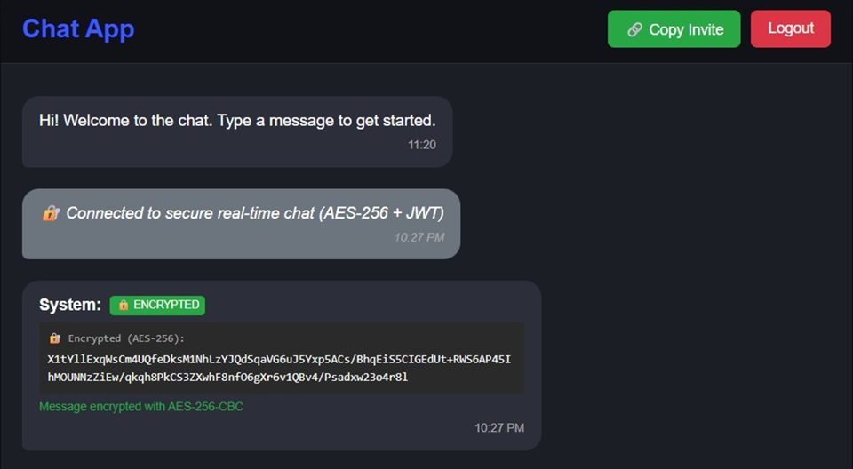

I build backend systems, APIs and AI-integrated products. Trainee Engineer at omniXM, previously Research Intern at IIT Kharagpur, with 3 research publications.
I'm a software engineer with hands-on experience building and optimising backend systems, APIs, and data-driven products in Python and FastAPI, with additional depth in AI/ML. I also build fault-tolerant microservices (RabbitMQ, Redis, 40% higher throughput) and secure APIs (JWT, AES-256).
I have three research publications, including IEEE ICSSES 2025, and I'm certified by Meta (Back-End Developer), IBM (AI Engineering), and AWS Academy. I'm open to Software Engineer, Backend, Full-Stack, and Data/ML roles.
983 req/min
Load-tested production API (3.7x peak requirement), ~10x lower latency
58.5% → 87.3%
Topic classification accuracy on a reviewer-labelled set
0.8992 → 0.9333
F1 on an entity-resolution baseline
52%
Lower position error with ML-based fault detection
Python, FastAPI, REST APIs, WebSocket, React, Docker, Azure, AWS, MySQL, MongoDB, Redis, CI/CD
omniXM
August 2026 – Present
Pune City, Maharashtra, India
Backend and AI engineer on the engineering team, building APIs and AI-integrated products in Python and FastAPI.
Indian Institute of Technology, Kharagpur
August 2026 – September 2026
Kharagpur, West Bengal, India
Worked in the Department of Computer Science and Engineering on LLM-based data agents focused on reliable data selection, reasoning, and answer verification.
LogiXair
May 2025 – July 2025
India
June 2022 – June 2026
Amrita Vishwa Vidyapeetham, Bengaluru
CGPA: 6.89
April 2020 – June 2022
Sri Chaitanya Junior College, Eluru
April 2020
National High School, Kaikalur
Multi-agent RAG assistant: specialist Legal, Brand and Operations agents retrieve evidence from ChromaDB and Llama 3.1 8B (via Ollama) drafts the answer. A confidence gate (threshold 80) auto-approves it or sends it to human review, and approved decisions are stored as reusable memory.
Working prototype, not a production system.
Evaluates LLM agents on entity resolution and schema matching. On 175 Abt-Buy product pairs, the improved agent raised F1 from 89.92% to 93.33% and precision from 81.69% to 90.32%, correcting 9 of 13 false positives. Baseline schema matching on 320 column pairs scored 86.32% F1.
Independent research pilot; the improved schema-matching run is incomplete and excluded from the results.
Fault-tolerant distributed system that detects vehicles (YOLOv11), reads license plates (PaddleOCR) and flags helmet violations (YOLOv9n) in images and video. Independent workers pull tasks from RabbitMQ and write results to Redis, so tasks for a crashed worker wait in the queue and partial results are still returned. The API uses key auth and a 10 requests/min Redis rate limit.
Prototype, tested locally with Docker Compose.

FastAPI secure chat app with AES-256 encryption, OTP-backed signup and password reset, JWT sessions, and ML plus rule-based phishing detection (CatBoost, about 96.7% accuracy/F1, under 10 ms inference). Ships with Docker and Render deployment.
Back-End Development
Meta
Cybersecurity Fundamentals
Cisco Networking Academy
Issued Jul 2026
View CredentialIEEE ICSSES 2025 — 3rd International Conference on Smart Systems for Applications in Electrical Sciences
Published Mar 21, 2025
Built an integrated disaster management system combining ML-based severity prediction with real-time multi-modal geospatial routing for flood and earthquake evacuation scenarios.
Key Results
IEEE ETCOM 2025 — International Conference on Emerging Trends in Communication
Published 2025
Designed and implemented a low-cost embedded VPN router using Raspberry Pi, enabling secure encrypted network tunneling for IoT and edge computing environments. Published at IEEE ETCOM 2025.
Read PaperICRDICCT 2025 — International Conference on Recent Developments in ICT
Published 2025
Research paper exploring AI and advanced technology applications for modernizing university placement ecosystems — improving efficiency, matching accuracy, and transparency in campus recruitment workflows. Published at ICRDICCT 2025.
Drag to rotate · hover to pause
Python, JavaScript
LLMs, RAG, Agents, ChromaDB, scikit-learn, XGBoost, CatBoost
FastAPI, REST APIs, WebSocket, SQLAlchemy, RabbitMQ, Redis, Node.js
React, JavaScript, Three.js, Streamlit, HTML/CSS, Tailwind CSS
MySQL, MongoDB, SQL
Azure, AWS, Docker, CI/CD, Git, Linux
Feel free to reach out to me for project inquiries, collaborations, opportunities, or just to connect.